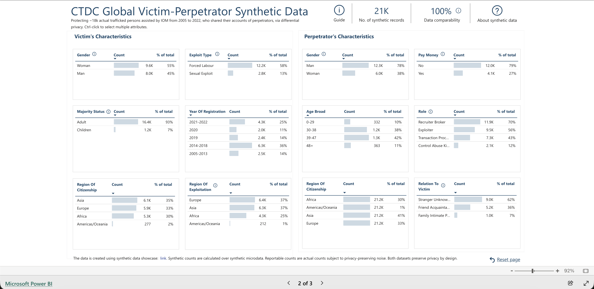

Week 1 left us with an attackable lookalike table. “Synthetic” described how rows were manufactured; it never supplied a privacy guarantee.
Original rows — decoded values
The next table shows five fixed original rows and only the eight fields used in this lecture. Categorical values are translated to their public labels; age and person income retain their exact original values.
Code
show_table(table_preview.original)
Sex
Age
Education
Employed?
Married?
Minor children at home?
PUMA area
Person income
source row
24
Female
34
high school graduate
No
Yes
Yes
north Fulton (Alpharetta)
$25,000
3216
Male
24
high school graduate
No
Yes
No
Roswell–Sandy Springs
$7,800
8951
Male
48
bachelor's degree
Yes
No
No
north Atlanta
$315,000
12681
Male
22
college, no degree
No
No
No
central Atlanta
$0
22784
Female
49
high school graduate
Yes
No
Yes
southern Fulton
$40,500
The same original rows — quantized values
These are the same five people, now quantized into the public categorical domains declared before any private computation.
Code
show_table(table_preview.discretized)
Sex
Age range
Education group
Employed?
Married?
Minor children at home?
PUMA area
Person-income range
source row
24
Female
30–39
high school / some college
No
Yes
Yes
north Fulton (Alpharetta)
$25,000–34,999
3216
Male
18–29
high school / some college
No
Yes
No
Roswell–Sandy Springs
$1–9,999
8951
Male
40–49
associate / bachelor's
Yes
No
No
north Atlanta
$200,000+
12681
Male
18–29
high school / some college
No
No
No
central Atlanta
Nonpositive income
22784
Female
40–49
high school / some college
Yes
No
Yes
southern Fulton
$35,000–49,999
Our “true data” in this lecture
Fulton is public, so we can inspect these examples. From now on, however, treat the fixed discretized construction partition as the confidential ground-truth table \(D_{\mathrm{true}}\). Every synthetic release may depend on \(D_{\mathrm{true}}\) only through its explicitly accounted private measurements.
Adjacency: substitute one row; every release uses \((\varepsilon,\delta)=(1,10^{-5})\).
Accounting: compose Gaussian measurements in \(\rho\)-zCDP.
Through-statistic: education \(\rightarrow\) the ordered income distribution.
Adjacency is part of the guarantee, not a footnote. This lecture substitutes one row: a neighbouring table has the same \(n\) with one person replaced. Lecture 12 adds or removes one row instead, so its \(n\) changes by one. The two conventions are not interchangeable, and an \(\varepsilon=1\) substitution guarantee is in general the stronger claim, because one substitution is one removal followed by one addition. When we compare a Lecture 11 number with a Lecture 12 number, we are comparing mechanisms under two different neighbour relations, not two points on one scale.
The last variable is total person income (PUMS PINCP), not salary: it can be zero or negative. We use one Nonpositive income category rather than spend a separate cell on losses and another on zero, followed by \(\$1\)–\(9{,}999\) and the public dollar cut points above \(\$10{,}000\). This gives eleven useful, ordered categories while retaining the \(\$50{,}000\) boundary used later.
If analysts only need a fixed query workload, releasing those answers directly is usually simpler and more accurate than manufacturing general-purpose rows.
The seven 2000 Fulton PUMA codes use short display labels:
PUMA
short course label
01101
north Fulton (Alpharetta)
01102
Roswell–Sandy Springs
01103
north Atlanta
01104
central Atlanta
01105
south Atlanta / airport
01106
southeast Atlanta
01107
southern Fulton
These are readable summaries of the documented multi-place/tract compositions, not municipality names. Internal marginal code still uses categories 0–6.
A real-world example: IOM / CTDC
This is the one case for which the primary sources support the complete story needed here: an actual downloadable release, a formal differential-privacy claim, a documented construction mechanism, and a source-produced visual.
What was released
The official CTDC release page provides a downloadable synthetic CSV, codebook, and data dictionary. CTDC says the release represents case data from more than 17,000 victims and survivors identified in 123 countries and territories, together with their accounts of more than 37,000 perpetrators, covering 2005–2022. The codebook describes 16 released variables: seven about victims, citizenship, and exploitation and nine about victims’ accounts of perpetrators.
The same CTDC page and the Microsoft Research release note state that this release provides differential privacy. Neither linked source states a numerical \((\varepsilon,\delta)\) value, so none is asserted here.
The released synthetic product, shown by CTDC

CTDC Global Victim–Perpetrator Synthetic Data dashboard, with victim and perpetrator characteristic summaries.
Source-produced dashboard screenshot, not a course reconstruction and not confidential microdata. The dashboard accompanies the official CTDC synthetic-data release. Credit: “Source: Counter-Trafficking Data Collaborative (CTDC), July 2026.”
query counts of short combinations of case attributes and release those counts with differential privacy; then
sample synthetic records from the private aggregate counts.
The second stage is post-processing, so the synthetic records retain the privacy guarantee of the aggregate counts. The codebook also warns that these are reported cases, not a random sample of trafficking victims worldwide, and therefore should not be used to estimate prevalence.
Start with a Gaussian whose mean is unknown
Suppose the private observations follow a Gaussian model with unknown mean \(\mu\) and known standard deviation \(\sigma\):
The experiment fixes \(n=2{,}000\), \(\mu=0\), known \(\sigma=1\), public clipping bounds \([L,U]=[-6,6]\), and \((\varepsilon,\delta)=(1,10^{-6})\), which converts to \(\rho\approx0.01747\). It releases \(m=n=2{,}000\) synthetic rows and uses 12,000 repeated experiments (3,000 in notebook smoke tests). For a standard Gaussian, \(\Pr(|X-\mu|>6\sigma)\approx2\times10^{-9}\); by a union bound, the probability that any of the 2,000 observations is clipped is below \(4\times10^{-6}\). Thus the no-clipping approximation used below holds with high probability under the stated model.
An unbounded Gaussian sample mean has infinite global sensitivity. We therefore declare public bounds \([L,U]\) and clip each observation before computing \(\overline X\). Under substitution adjacency,
Thus the private estimate looks like an ordinary Gaussian sample mean with slightly more variance—or an effective sample size \(n_{\mathrm{eff}}=\sigma^2/(\sigma^2/n+s_{\mathrm{DP}}^2)\) smaller than \(n\).
Now draw \(Y_j^*\sim\mathcal N(\widetilde\mu,\sigma^2)\) and release \(Y_j=\Pi_{[L,U]}(Y_j^*)\) for \(j=1,\ldots,n\). When clipping is rare, their mean adds one more sampling term:
Sampling the synthetic rows is randomized postprocessing, so it cannot weaken the Gaussian mechanism’s guarantee. We postpone the separate question—whether sampling alone can provide privacy—until after seeing the Binomial analogue.
The next experiment runs the actual clipped mechanism repeatedly rather than drawing the displayed curves from the no-clipping approximation. Its legend reports the original construction size as exact \(n=2{,}000\); its derived \(n_{\mathrm{eff}}\) labels use the analytic no-clipping variances.
Both panels show the same three Gaussian estimators. The left panel is a smoothed empirical density; the right is the empirical CDF. The DP fitted mean is slightly wider than the ordinary sample mean, and the mean of the released rows is wider again. The synthetic rows are useful output, but they are not \(n\) new observations from the original population. Standard errors computed as if they were fresh evidence therefore answer the wrong question.
Why might a Monte-Carlo estimate previously have shown the original \(n_{\mathrm{eff}}\) as close to, but not exactly, 2,000? It estimated variance from finitely many repeated, clipped samples. Finite simulation error and the very rare clipping events perturb that estimate. Analytically, \(\operatorname{Var}(\overline X)=\sigma^2/n\), hence \(n_{\mathrm{eff}}=\sigma^2/(\sigma^2/n)=n\) under the displayed no-clipping Gaussian model. The figure now reports that analytic value.
Second step: the Binomial model
Now let \(S\sim\operatorname{Binomial}(n,p)\) be the number of successes and \(\widehat p=S/n\) the sample mean. Its substitution sensitivity is \(1/n\). Apply the same two-step construction:
Here the chosen values are \(n=2{,}000\), \(p=0.35\), \((\varepsilon,\delta)=(1,10^{-6})\), hence \(\rho\approx0.01747\), and \(m=n=2{,}000\) released Bernoulli rows. The experiment uses 60,000 repetitions (20,000 in notebook smoke tests).
Ignoring the rare projection at 0 or 1, match the variance of \(\overline Y\) to \(p(1-p)/n_{\mathrm{eff}}\). This predicts an ordinary Binomial experiment with a smaller effective sample size. We use the same plot as for the Gaussian: a density/mass view on the left and an empirical CDF on the right. The ordinary effective-size Binomial reference appears in both panels.
The density/mass and CDF views tell the same story: the released-row curve nearly coincides with the ordinary Binomial reference at the displayed \(n_{\mathrm{eff}}\). Again, generating \(n\) rows did not create \(n\) fresh observations; it produced a noisier estimate whose uncertainty is well described by a smaller effective sample.
Privacy from resampling alone
Now remove the separately added Gaussian noise and ask how many synthetic rows sampling itself can release. The answer is model-dependent.
Gaussian rows. Release \(m\) independent rows from \(\mathcal N(\overline X,\sigma^2)\) after clipping the original observations to the same public \([L,U]=[-6,6]\). With \(\Delta=(U-L)/n\), the complete output is
Bernoulli rows. Truncate the empirical probability to the public interval \([a,1-a]=[0.1,0.9]\). For neighboring datasets, call the two truncated values \(p\) and \(q\). Projection is nonexpansive, so \(|p-q|\leq1/n\) everywhere on that interval. If the released sample contains \(K\) ones, then under \(K\sim\operatorname{Binomial}(m,p)\) its privacy loss against \(q\) is
The plot uses \(m/n\) on the horizontal axis, so the vertical line at \(m/n=1\) always means “release as many rows as were in the original sample.” The title now holds the original sample size fixed at \(n=2{,}000\) for both mechanisms. The vertical axis is simply \(\varepsilon\); both curves use \(\delta=10^{-6}\). Both guarantees grow at the same leading \(\sqrt m/n\) rate. Their remaining quantitative difference comes from the public model constants shown in the title: Gaussian width \(12\sigma\) versus the Bernoulli interval \([0.1,0.9]\).
The Bernoulli truncation is essential: if probabilities may reach 0 or 1, a neighboring input can give an output positive probability versus zero probability, so no finite likelihood-ratio bound follows.
joint cells. An unrestricted joint distribution therefore has 29,567 free probabilities. Estimating that complete object is possible, but it spends noise on many combinations that may be rare or irrelevant.
We instead begin with smaller tables. A one-way table asks only how often each category appears in one column. A two-way table asks how often two categories appear together. After privately measuring selected tables, we fit one valid 29,568-cell distribution consistent with them as closely as possible and sample complete rows from that fit.
Temptation: make every column look right
For column \(j\) with \(d_j\) categories, release the complete normalized histogram
Replacing one row can remove mass \(1/n\) from one category and add it to another, so the whole vector has \(L_2\) sensitivity \(\sqrt2/n\). The eight column histograms contain
\[
2+6+4+2+2+2+7+11=36
\]
cells in total, but they are eight vector queries—not 36 separately composed scalar queries.
Where does the 8 come from? There are exactly eight released column vectors: sex, age, education, employment, marriage, minor children, PUMA, and income. Convert the common \((\varepsilon,\delta)\) target to total \(\rho\) and assign \(\rho_j=\rho/8\) to each of those eight vectors. For every coordinate of vector \(j\), add independent noise
For the full notebook run, \(n=20{,}613\) and \(\rho=0.02081994\), so each vector gets \(\rho_j=0.00260249\), \(\Delta_2=\sqrt2/n=0.00006861\), and every coordinate receives Gaussian noise with standard deviation \(0.00095096\). Within a vector, the \(d_j\) noisy coordinates are already covered by that vector’s sensitivity calculation; we do not compose again over categories.
Project each noisy vector to its probability simplex and sample the columns independently:
This construction is designed to make every column look right. Education uses four of the 36 released cells and person income uses eleven. After introducing two-way measurement, we will compare these direct noisy one-ways with the one-way marginals induced by one noisy education × income table.
Downside: one-way marginals do not determine relationships
The left panel is the actual Fulton education × income joint used as the truth reference in this notebook. Its true income marginal sits immediately above it, and its true education marginal sits immediately to its right.
The right panel is a public mathematical illustration of independence: \(A_{ei}=p_E(e)p_I(i)\). It is not the private one-way release, not sampled synthetic data, and not a fit to Fulton. Its fixed illustrative education and income marginals are shown around the table so the independence construction is fully specified. Its role is only to show how multiplying one-way probabilities fills a \(4\times11\) joint table. The next figure performs the actual comparison against the exact and private one-way products used by the lecture artifact.
The one-way fit does what it promised: each education and income marginal is close. But those 4 and 11 cells do not determine the \(4\times11=44\) cells in the education × income table.
The next figure follows six fixed, interpretable cells through four stages:
their frequency in the real joint table;
the product of the exact, nonprivate one-way marginals;
the product of the private one-way marginals; and
their frequency after sampling the released synthetic rows.
The first gap is independence misspecification, the second is DP measurement error, and the third is finite synthetic-sample variation.
To preserve relationships, measure joint categories rather than multiplying separate one-way probabilities. For columns \(j\) and \(k\) with \(d_jd_k\) joint cells, define the complete normalized contingency-table vector
A substituted row again moves mass \(1/n\) from at most one joint cell to another, so the whole pair vector has \(L_2\) sensitivity \(\sqrt2/n\), regardless of whether it contains 4 cells, 44 cells, or another pair-specific count.
For one pair allocated \(\rho_{jk}\), the private mechanism is
There are \(\binom82=28\) column pairs containing \(\sum_{j<k}d_jd_k=529\) pair cells. The all-pairs alternative is one fresh release: allocate \(\rho_{jk}=\rho/28\) to each of the 28 complete vectors, add independent Gaussian noise to all 529 coordinates, and compose \(\sum_{j<k}\rho_{jk}=\rho\). Privacy composition is over 28 vector mechanisms, not over 529 scalar cells.
The 28 noisy tables overlap and generally disagree. Rather than project each one independently, retain every raw vector \(y_r\), its marginalization operator \(A_r\), and its Gaussian scale \(\sigma_r\), then fit one joint distribution:
The next figure isolates one of those 28 already-accounted-for tables. It shows the education × income slice: the real \(4\times11\) table, its raw private measurement from the all-pairs release, and the same measurement after replacing negative cells by zero and renormalizing. The plot does not represent a single-pair mechanism; all 28 tables were measured at \(\rho/28\) before this one was selected for display. It uses the same blue heatmap-plus-marginals grammar as the earlier fixed-marginal diagnostic.
Downside: two-way tables give noisier one-way answers
All pairs preserve much more dependence, but divide the fixed privacy budget across 28 tables whether or not the analyst needs them. A pair vector does not have greater \(L_2\) sensitivity than a one-way vector: both have \(\sqrt2/n\). The loss begins with budget fragmentation: \(\rho/28\) per pair rather than \(\rho/8\) per one-way vector makes each pair-cell noise standard deviation \(\sqrt{28/8}\approx1.87\) times larger.
Marginalizing then sums independent noisy cells. The education marginal sums eleven income cells, so its expected noise standard deviation is \(\sqrt{11}\sqrt{28/8}\approx6.20\) times the direct one-way value. The income marginal sums four education cells, giving a factor \(\sqrt4\sqrt{28/8}\approx3.74\). The next figure compares those induced marginals with the dedicated one-way measurements. The raw result is shown before validity postprocessing so truncation cannot hide the accumulated measurement noise.
The black bars are the real-data truth. The direct one-way release is usually closest because each vector receives \(\rho/8\). The raw two-way table receives only \(\rho/28\) and can induce negative marginal cells. Truncation restores a valid table, but it is postprocessing rather than recovered information: it can move every marginal when it removes negative joint cells and renormalizes.
That bar plot follows the education × income table alone, but the all-pairs release contains seven independently noised pair tables involving education and seven involving income. Marginalizing each overlapping table therefore gives seven different answers to the same one-way question. The next heatmaps show those raw pair-induced answers minus truth. A noise-aware joint fit restores formal consistency by finding one compromise distribution; it cannot make the inconsistent measurements simultaneously exact or recover the noise-free answer.
Now use three binary variables because they have exactly eight inspectable states. The top row of the next figure first shows everything a one- and two-way release can learn: every binary one-way is 50/50 and every pair is uniform over 00, 01, 10, and 11. The bottom row then reveals two possible three-way truths. Even parity and odd parity put mass on opposite sets of four states while matching every displayed one- and two-way marginal perfectly. Thus all 28 Fulton pairs can improve pairwise accuracy without identifying a three-way relationship.
The parity witness suggests measuring triples next. With eight columns, however, Fulton has \(\binom83=56\) three-way vectors containing 4,154 cells. Under the same total budget, each vector would receive only \(\rho/56\)—and four-way relationships would still remain unidentified. Repeating “measure every order” eventually becomes the 29,568-cell full joint.
Repeating this strategy measures a growing collection of statistics without ever making the resulting table universally accurate. We now test that limitation with fixed downstream regressions before introducing an adaptive alternative.
Regression as a downstream accuracy measure
Regression is not another release mechanism in this comparison. It is a fixed evaluation protocol. For every synthesis method, train the same model on that method’s released rows and test it on the same untouched real evaluation partition. Training the model on the original construction rows gives a nonprivate oracle benchmark; it is not a release and it does not have zero error.
Every task uses the same seven public predictors: sex, age range, education group, employment, marital status, minor-children-at-home status, and PUMA area. The linear target replaces the eleven income bands by the public representatives
\[
(0,5,12.5,20,30,42.5,62.5,87.5,125,175,225)
\]
in thousands of dollars. The binary target is \(H=\mathbf1\{\text{income}\geq\$50{,}000\}\). We report held-out MAE for the linear tasks and held-out log loss for the logistic tasks; lower is better.
For each target we freeze two model specifications. The main-effects linear model uses ordinary least squares; the interaction-rich linear model uses ridge 1. The logistic models use \(C=1\). The main-effects design has 25 one-hot predictor columns. The interaction-rich design adds all 254 crosses between distinct predictor pairs, for 279 columns in total. A crossed feature such as education × sex must be related to income through a three-way distribution; the linear-model Gram matrix can combine two crossed features and involve as many as four predictors. Therefore even exact one- and two-way marginals do not determine these fitted regressions.
The standing-column comparison below includes only sources already introduced: the original-data oracle, the exact one-way product, the private one-way release, and the all-pairs release. MWEM is not included until it has been defined.
Code
show_figure( regression_utility_figure( artifact.metrics, methods=("oracle", "exact product", "one-way", "all pairs"), ))
Each standing column is the held-out performance of a model trained on the named table; lower is better. The main-effects and interaction-rich rankings need not agree. Matching pairwise tables directly supports many main effects, but it does not fix the three- and four-variable relationships used by the crossed regressions.
Publishing these benchmark scores is free only because Fulton is public. Evaluating or tuning on a private holdout would require another accounted private access.
A real exponential-mechanism algorithm: MWEM
Measuring all 28 pairs spreads the budget uniformly, while adding every triple would fragment it further. MWEM (Hardt, Ligett and McSherry, 2012) instead spends the budget adaptively on the marginal cells where its current distribution is most wrong.
Let \(x_{ij}\) be row \(i\)’s category in column \(j\). The public query family is
The family contains one query for every cell of every one-column table and every two-column table: \(\sum_j d_j=36\) one-column cells and \(\sum_{j<k}d_jd_k=529\) two-column cells, for 565 scalar fraction queries in total. It contains no three-way cells and no regression-specific interactions. Instead of refitting a joint from measured tables, MWEM maintains an explicit distribution \(x\) over all \(D=29{,}568\) domain cells and updates it multiplicatively.
Each round \(t\) does three things:
Select. Score every remaining \(q_r\in\mathcal Q\) by how far the current synthetic distribution is from the private table, \(s_r=|q_r(D_{\mathrm{true}})-q_r(x_{t-1})|\), and draw one with the exponential mechanism. Each \(q_r\) is a fraction of rows, so substituting one row moves it by at most \(1/n\): that is the score sensitivity.
Measure. Release that single cell with Gaussian noise at the same \(1/n\) sensitivity.
Update. For every domain cell \(j\), \[x_t(j)\;\propto\;x_{t-1}(j)\,\exp\!\Big(A_r(j)\,\frac{y_r-q_r(x_{t-1})}{2}\Big),\] where \(A_r\in\{0,1\}^D\) is one exactly on the domain cells inside the selected marginal cell.
Only steps 1 and 2 touch the private table. With \(T=100\) rounds and \(\rho/(2T)\) for each, the ledger composes to the same total \(\rho\) as every other release here.
Two implementation details matter. First, a single pass of step 3 moves the weights far too little: selecting all 565 queries with no noise at all only takes the mean workload error from \(0.111\) to \(0.072\). Hardt, Ligett and McSherry therefore re-apply the update over all measurements released so far, several passes per round. That loop re-reads already-released noisy values, so it is postprocessing and costs no budget — but it is what makes the algorithm converge. Second, the reported distribution is the average of the round iterates, as in their Algorithm 1; the final iterate usually scores better, but choosing it on that basis would be tuning the output on the private result.
The other classical exponential-mechanism answer, smallDB, selects an entire small synthetic database from the set of all databases of size \(m\) over the domain. That range has \(\binom{D+m-1}{m}\) elements, so it is a theoretical construction rather than something we can run here.
The next figure checks exactly those 565 cells. For each cell, its error is the absolute difference between the cell fraction in the released table and in the original table. The panels report the average and the largest error separately for the 36 one-column cells and the 529 two-column cells, in percentage points. The round-by-round transcript then records what MWEM selected and measured.
The final comparison asks six different questions of each of the five now-defined table sources. Each panel is its own horizontal leaderboard and uses its own units; lower is better. The real-data oracle is the benchmark row. The panels report:
error in the full education-conditioned income distribution;
mean income-bin error from multiclass train-synthetic/test-real prediction;
main-effects linear-regression income MAE;
interaction-rich linear-regression income MAE;
main-effects logistic high-income log loss; and
interaction-rich logistic high-income log loss.
These are not six estimates of one quantity. They test whether a release useful for one declared workload remains useful for another downstream task. This is the first regression comparison that includes MWEM: it adds MWEM to the same four frozen regression measures shown before the algorithm was introduced.
The ordering changes across panels. That is the intended result: utility belongs to a workload, not to the word “synthetic.” Exact one-way products do poorly when dependence matters; all-pairs helps the relationships it measures; and MWEM spends budget adaptively within its declared menu. A deployment should declare its queries or downstream tasks before choosing among these releases.
Closing: the workload remains part of the release
Private measurements can support useful synthetic tables, but only through the statistics, model family, and public workload chosen before private access. One-ways, all pairs, and MWEM’s adaptive selection pay for different promises; no row generator turns one promise into all of them.
The next lecture changes domains and starts again from a classical low-rank Gaussian construction before asking what a learned generator adds.
Reading map
smallDB privately chooses a small database; MWEM selects a worst query and applies multiplicative weights; PrivBayes assembles low-order conditionals; MST/Private-PGM reconstructs a graphical model; AIM adapts selection and measurement to a workload. These are extensions, not extra headline methods.